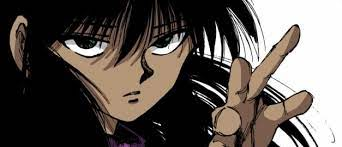

Aparência
Inochi Tomikake possui feições refinadas e expressivas, marcadas por olhos levemente caídos e um olhar penetrante que transmite serenidade e distanciamento ao mesmo tempo. Seu cabelo é longo, volumoso e preso em um rabo de cavalo alto, com mechas desordenadas que caem sobre seu rosto, conferindo-lhe uma aparência indomável e silenciosamente ameaçadora.
Veste-se de forma simples, com roupas funcionais e discretas que não restringem seus movimentos. Mangas curtas, gola alta e faixas escuras nos braços revelam uma estética prática, mas com certo requinte elegante. Sua postura reta e o semblante calmo contrastam com a intensidade contida que carrega no olhar.
